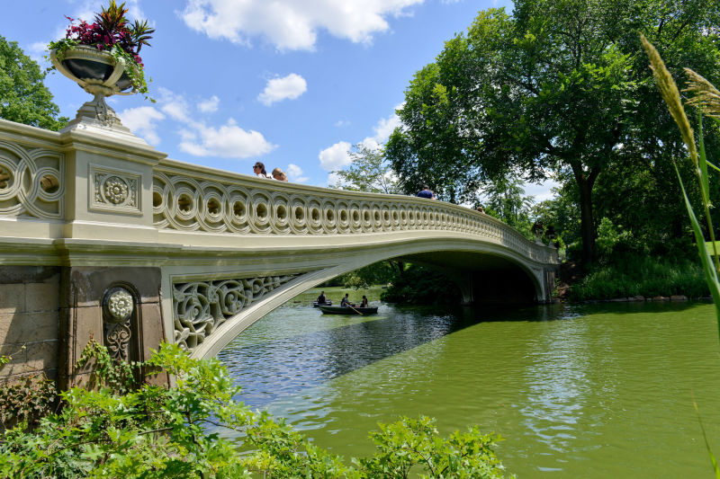
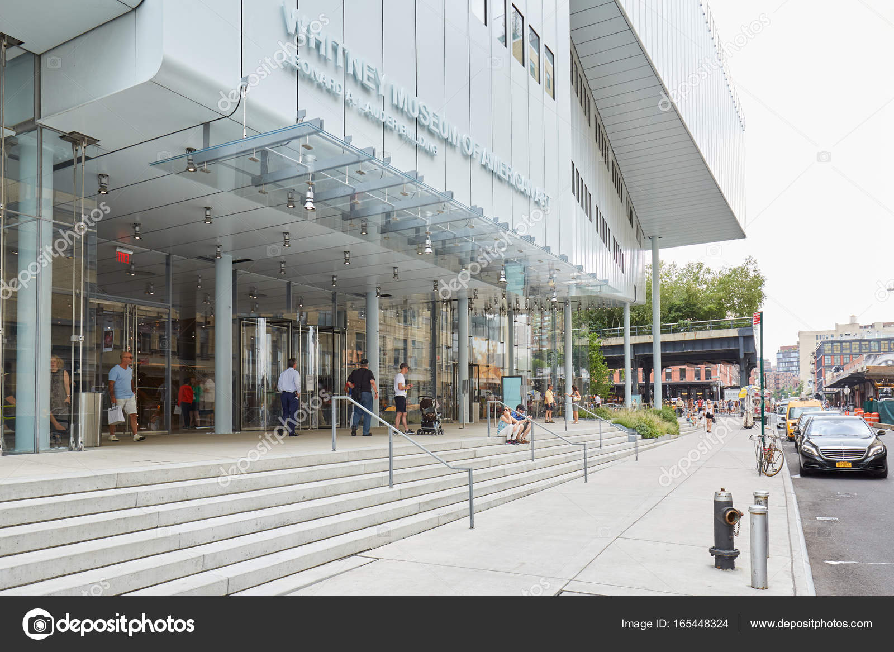
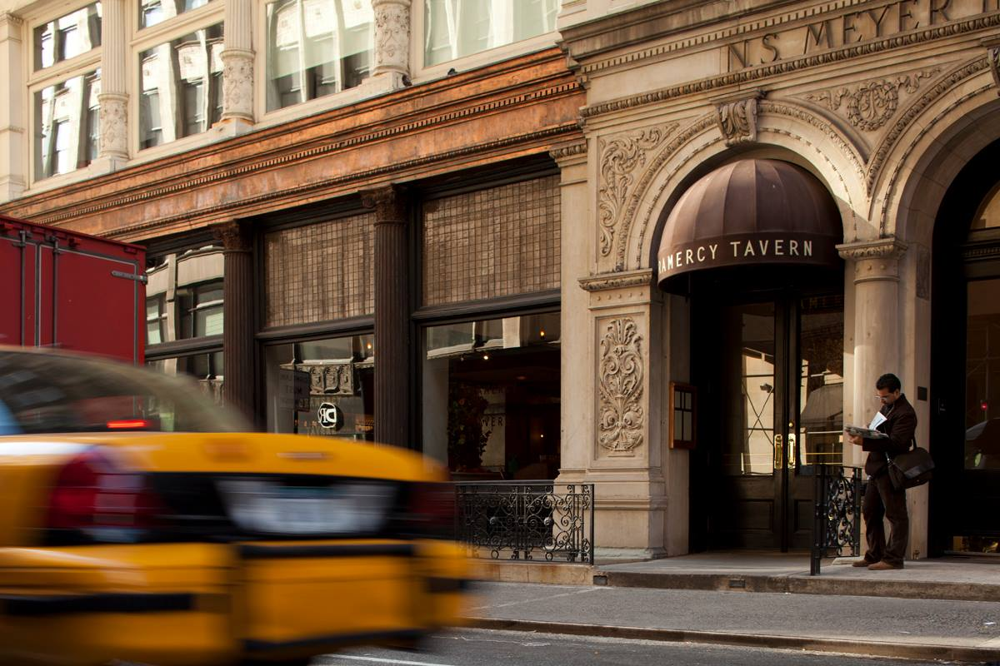

Parks
Central Park
Central Park is an urban park in Manhattan, New York City. It is located between the Upper West Side and Upper East Side, roughly bounded by Fifth Avenue on the east, Central Park West (Eighth Avenue) on the west, Central Park South (59th Street) on the south, and Central Park North (110th Street) on the north.There's so much to do in Central Park. Plan your activities. Visit the Central Park website for more information.
Museums
The Whitney Museum of American Art
The Whitney Museum was founded in 1931 by Gertrude Vanderbilt Whitney (1875–1942), a wealthy and prominent American socialite and art patron after whom the museum is named after. To get more information visit The Whitney Museum of Art website.
Restaurants
Gramercy Tavern
One of America's most beloved restaurant, Gramercy Tavern opened in 1994 by restaurateur Danny Meyer in a historic landmark building, the restaurant has earned nine James Beard Awards, including "Outstanding Restaurant" and "Outstanding Chef in America". Make your reservation today by visiting Gramercy Tavern.